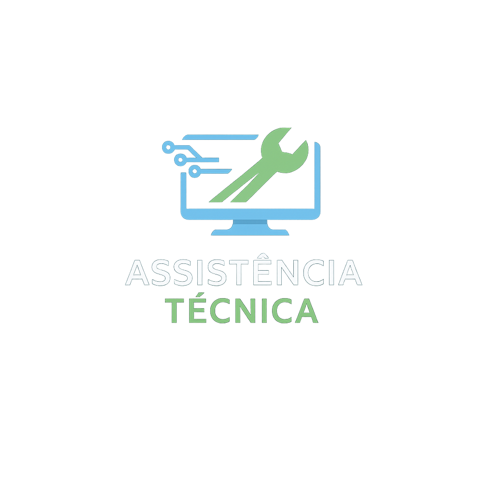
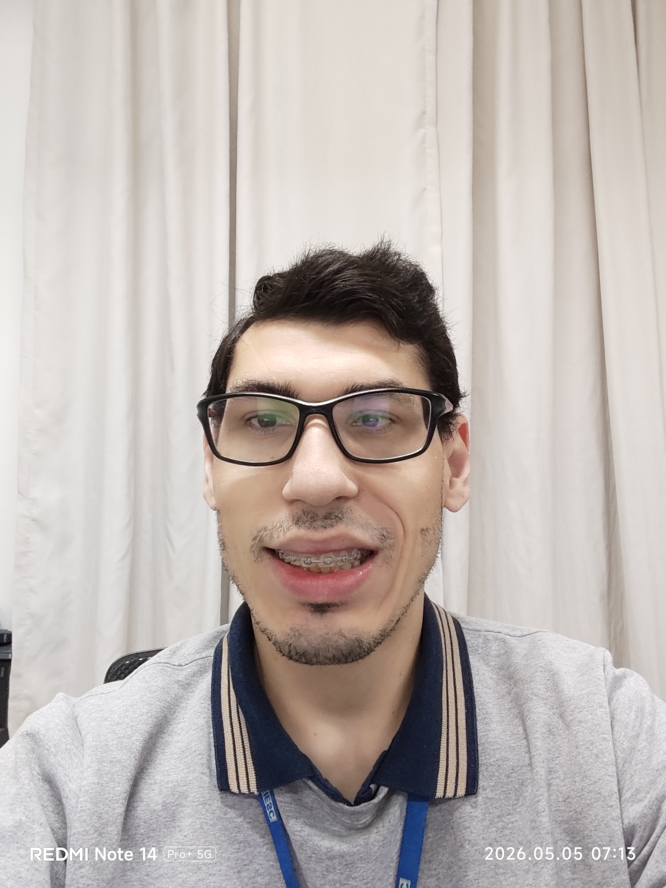

Fundada em 2024 para oferecer soluções rápidas e confiáveis em tecnologia
Fale pelo WhatsAppFundada pelo Bruno Eduardo Avi, Técnico de Suporte de TI Jr no SENAI de Blumenau, o intuito dessa fundação é auxiliar as pessoas com suporte especializado e um atendimento facilitado e de qualidade na realização dos serviços e na consultoria na aquisição de computadores para o uso pessoal e empresarial.
Nosso fundador Bruno Eduardo Avi, nascido no ano de 1998, atualmente trabalhando a 9 anos no SENAI de Bumenau, sempre atuou na área de tecnologia onde ele tem formação técnica em manutenção e formatação de computadores, gosta de sempre buscar novos conhecimentos na área de tecnologia. A formação atualmente é em administração cursando a Uniasselvi.
